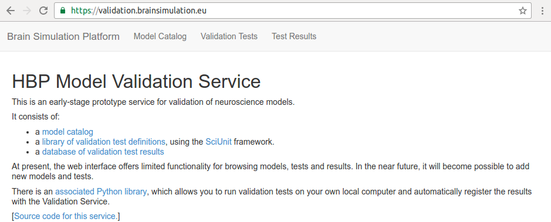

∙ Installation and Set-up.
∙ Choosing and Loading a Model.
∙ Choosing and Loading a Test.
∙ Running the Desired Validation Test On the Chosen Model.
∙ Store the Data of the Results and then Register.
∙ All the above from a python script.
At current stage of the development of the HVF platform, the framework is accessible via client and it will be possible to access through an app in the future. Therefore, this quick-guide will demonstrate how a user can access from a client (python client or juputer notebook). The juputer notebook will be used to illustrate this.

Purpose
Walks the beginner through the current HBP Validation Framework Platform (https://validation.brainsimulation.eu). At the present stage of development the platform can be accessed (to run some available validation tests and model) from the client. A validation app for the framework is part of future development. This guide walks the beginner through the accessing of the framework from a client.
Table of Contents
1 Install and Set-up Instruction.
Comment: Can skip, if primary intention to dive into using how the validation framework platform works.
2 How to download test definitions from HBP-Validation-Framework (HVF).
Comment: Start here if you want to quickly know how to start using the framework (HVF).
3 How to get list of models available for running the v-test.
Comment: 2 to 5 are core steps needed to the understanding of how to run HVF.
4 How to run the desired v-test for a chosen model.
5 How to store/register the data/results of the v-test run.
6 How to run the test from a script.
Comment: If you are already familiar with steps 2 to 5 you can skip them and only check this step.